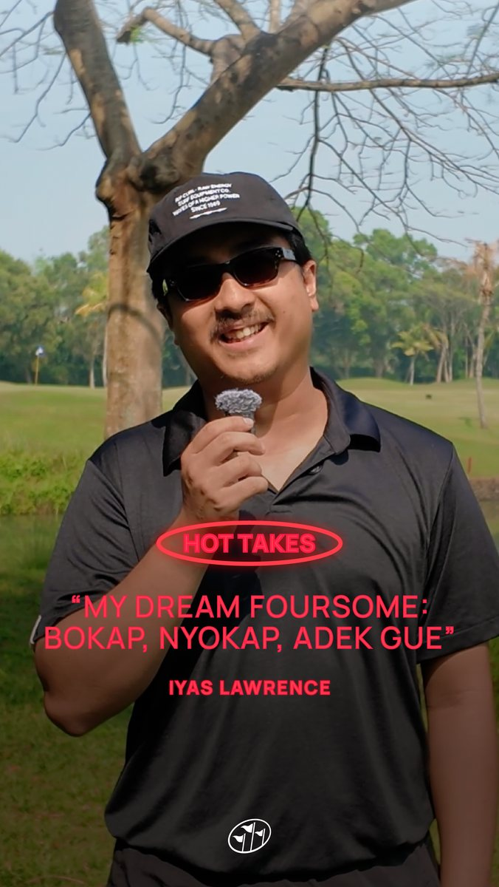
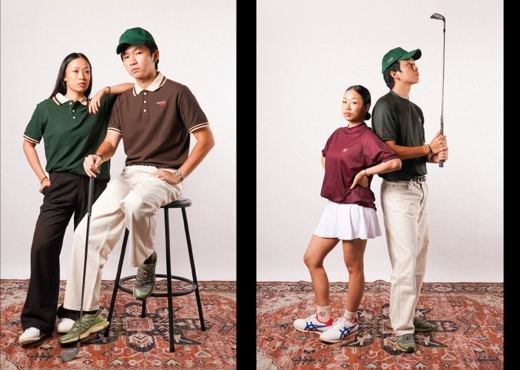
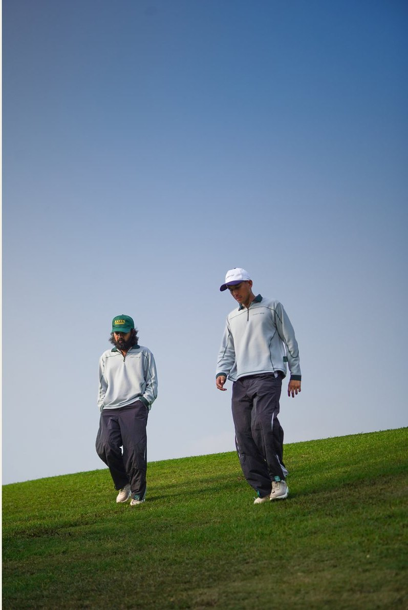
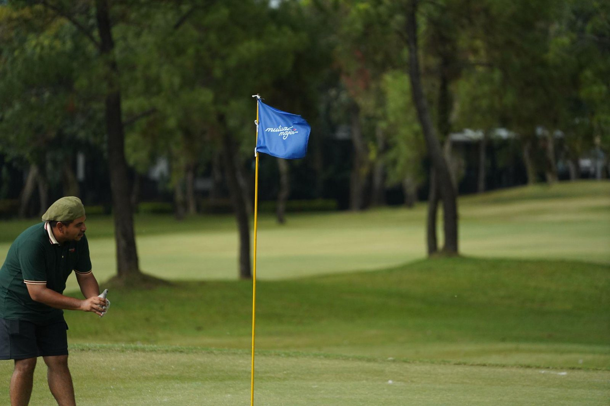

The new culture of golf
Mutual is a modern golf media platform founded in 2025. We dive into the culture, stories and lifestyle behind the game — turning golf from a sport people watch into a lifestyle people want to be part of.
Three pillars, one culture
Media & community on every screen
Shows, vertical series and stories that open golf up to people inside and outside the game — and a community that grows around them.
- 8 YouTube shows, from ASMR to Play Off
- 5 vertical series for Instagram and TikTok
- Feed & editorial: Social Round, Unwritten, Groundwave, re:store
- 2.4M people reached · 300M+ media views



Brand products beyond the sport
Apparel and collaborations that carry the Mutual lifestyle from the course to the city, made with brands that share the culture.
- Akross × Mutual — the latest collection
- Mutual Club × Club of Five
- Orangegrounds × The Mutual Golf
- Mutual Club pop-ups and club days




Real-life experience onto the course
Tournaments, a reality show, markets, clinics and community nights — organised, produced and filmed by Mutual.
- Mutual Major — tournament and reality show
- Mutual Grounds Market
- Coach Says Live clinics
- Charity Classic for Marriott Business Councils




Work with Mutual
Brand partnership
Put your brand inside our shows, verticals and events — from product placement to a full programme built around you.
Send a briefEvents & activations
Tournaments, clinics, markets and community nights, planned, produced and filmed by Mutual.
Send a brief